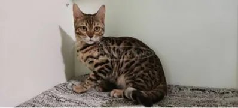

Bengáli
A dzsungel öröksége a nappaliban — rozettás bunda, izomkötegek, óceánnyi kíváncsiság.
Perzsa
Lassú mozdulatok, dús bunda, egy évszázados szalonlét méltósága.
Két tenyésztett véglet — melyik illik hozzád?
Megjelenés
Az egyik testben a vadon feszül, a másikban egy felhő pihen.
Bengáli

- Rövid, sűrű bunda rozetta- vagy márványmintával
- Testsúly: 4–7 kg, izmos testalkat
- Nagy, mandulavágású szem — zöld vagy arany
Perzsa

- Hosszú, dús bunda
- Testsúly: 3–5,5 kg, zömök testalkat
- Kerek fej, lapított arcprofil
Jellem
A viselkedésük ugyanolyan távol áll egymástól, mint a küllemük.
Bengáli
Vadász ösztön
Órákig figyel egy pontot, majd villámgyorsan lecsap — játékra, nem harcra.
Bengáli
Magas energiaszint
Napi aktív játékidő nélkül unatkozik.
Bengáli
Vízimádat
Sokan szeretik a csepegő csapot, sőt a kádat is.
Perzsa
Nyugodt kedély
Órákat elpihen egy párnán, ritkán rohangál.
Perzsa
Csendes társaság
Szereti a közelséget, de nem tolakodó.
Perzsa
Rutinszerető
A kiszámítható napirendben érzi jól magát.
Ápolás
Az egyik szinte önjáró, a másik napi rituálét kíván.
Bengáli
- Heti egy fésülés elég
- Napi 20–30 perc aktív játék
- Magasban lévő polcok, kaparófák szinte kötelezőek
Perzsa
- Napi fésülés kötelező
- Rendszeres arctisztítás a lapos orrforma miatt
- Évente egy-két alkalommal szakmai fürdetés ajánlott
Egészség
Mindkét fajtánál vannak jellegzetes, tenyésztésből eredő kockázatok.
Bengáli
- Hipertrófiás kardiomiopátia (szívizom-megvastagodás)
- Progresszív retina-atrófia (öröklött látásromlás)
Perzsa
- Policisztás vesebetegség (genetikai szűréssel kiszűrhető)
- Légzési nehézségek a lapos arcforma miatt
Kinek való?
A választás valójában életmódkérdés, nem csak esztétika.
Bengáli, ha…
Illik hozzád
- Van időd napi aktív játékra
- Szereted a kíváncsi jellemű macskát
Perzsa, ha…
Illik hozzád
- Szereted a napi ápolási rituálékat
- Nyugodt, kiszámítható otthoni életet élsz
Összehasonlítás dióhéjban
|
Bengáli |
Perzsa |
| Bunda | Rövid, mintás | Hosszú, dús |
|---|
| Energiaszint | Magas | Alacsony |
|---|
| Ápolási igény | Alacsony | Magas (napi) |
|---|
| Várható élettartam | 12–16 év | 10–15 év |
|---|
Ár Magyarországon
Az árak tenyésztőnként és származástól függően nagyon eltérhetnek.
Bengáli kölyök, törzskönyvvel
kb. 350–800 ezer Ft
Perzsa kölyök, törzskönyvvel
kb. 200–500 ezer Ft
A fenti számok tájékoztató jellegűek — mindig kérj egészségügyi papírokat és látogasd meg a tenyészetet vásárlás előtt.